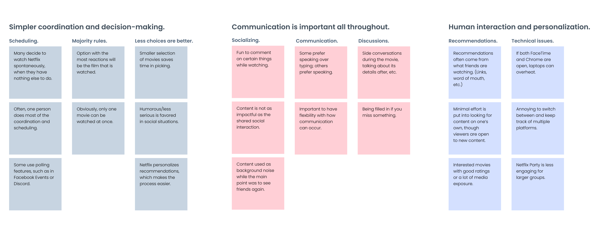

WHO: A team of 2, (including myself.)
WHAT: Entry for Netflix Creative Jam with Adobe XD. Placed 23rd out of 600+ teams (2,300+ students.)
WHEN: June 22 (11:00 AM) to June 24, 2020 (10:00 AM PST.)
HOW: Interviews, Competitive Research, Wireframing (Figma), Prototyping (Adobe XD)
For this competition, Adobe + Netflix tasked us with creating a third-party website that would bring people closer together when streaming movies. My partner and I decided to create a platform that would allow users to simulate in-person viewing experiences while also capitalizing on activities you can only do online. Our product, Gazer, (with a name inspired by the endless viewing of the galaxy, ) allows users to view content in revolutionary ways.


We conducted quick interviews with 6 people in total. In these interviews, we asked about peoples' experience with Netflix Party, what other apps they knew of, how they go about selecting movies to watch, what streaming is like, and more. From that, we identifed a couple of pain points:
We created an affinity map to see trends in experiences. We found that currently, there was not a good platform that synced streaming experiences and that streaming is more about the social interactions than it is about watching the movie or show (most of the time.)
We did researched the UI/UX of 12 "similar" applications. Below are some summaries.
Before moving forward, we did a bit more research regarding the main consumers of content. We decided that our application would be all-inclusive, though the design would be a bit more modern and hip. Some features may also seem like they are better suited for younger audiences, but they are not discriminatory towards older audiences.
Next, we solidified the features of our application. Our information architecture diagram ties all of the features together and gives a glimpse into Gazer's user flow. On Gazer, the user would create an account then go through an onboarding process to choose their favorite content genres, aided by Alex, the app's virtual assistant. (We also added a more extensive tour for the judges since they probably have a really short time with each entry and would rather be guided through the app than figure things out for themselves.)
From low-fidelity to high-fidelity, we wireframed with the user flow (as previously delineated) in mind.
It was incredibly hard trying to go through as much of the design process as possible in the span of 30 hours. I think that I hardly slept throughout the course of this design challenge. It was also difficult optimizing a design that would be viewed and followed well by judges as well as a product that would be able to stand well alone. (In this case, our tour was much too long for a regular user, but perhaps useful for the judges.)
Another difficulty was that I actually worked with someone who had a very different design style than I did. It was hard to get used to at first, but eventually, we meshed pretty well and were able to get the project done on time.
Next time, I definitely want to leave an hour or two for usability testing. Of course, our group tested the prototype to see if everything was working properly, but we did not have enough time to get feedback.